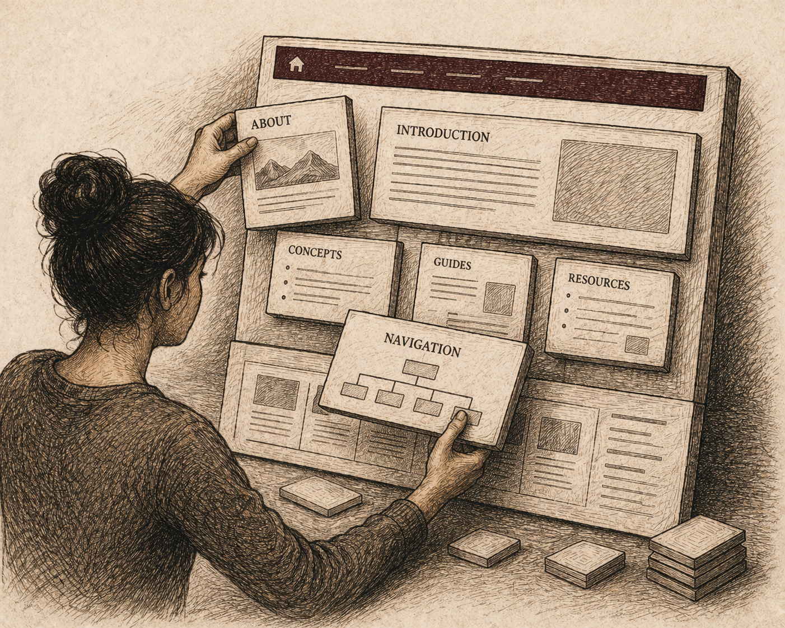

Introduction
Structure Shapes Meaning
Most knowledge systems are evaluated on usability, accuracy, and speed of retrieval. Those measures matter, but they miss something important: structure shapes interpretation.
Every decision about how information is organized, categorized, connected, and presented influences what readers notice, what they ignore, and how they understand a domain. These effects are not limited to writing. They emerge from the architecture itself.

This site is written for the people who build those structures: technical writers, information architects, knowledge managers, UX professionals, and content strategists. Whether you are designing a help center, documentation portal, knowledge base, or AI-powered retrieval system, you are doing more than organizing information. You are deciding what concepts matter, how they relate to one another, and what paths users can follow to make sense of a subject.
Those decisions are rhetorical.
The central argument of this site is that information architecture does not simply support communication; it participates in it. Taxonomies, hierarchies, metadata, navigation systems, and increasingly ontologies and semantic structures all shape meaning. They direct attention, establish relationships, reinforce assumptions, and influence credibility before a reader encounters a single sentence.
This perspective becomes even more significant as organizations move toward AI-assisted retrieval and knowledge systems. Search engines, recommendation systems, and large language models do not interact directly with reality. They interact with representations of reality that humans have structured, classified, and modeled. The same architectural decisions that shape human understanding increasingly shape machine interpretation as well.
The sections that follow examine how information architecture functions rhetorically, from the codification of knowledge and the construction of taxonomies to the consequences of structural failure. The goal is not simply to critique existing systems but to provide a vocabulary for understanding the persuasive work that structure performs every day.
How the Site Is Organized
IA & Rhetoric
What rhetoric means, why every structure is an interpretation, and how the three classical appeals of logos, ethos, and pathos give you a vocabulary for the decisions you make every day.
Part TwoKnowledge Codification
Why deciding what to write down comes first, how those choices reflect organizational priorities rather than facts, and what gets lost when tacit know-how becomes an article.
Part ThreeStructural Models
Hierarchy versus facets, what each does to a reader, and how one healthcare site’s hybrid model points to a practical way of choosing between them.
Part FourUsability & Trust
What happens when structure fails, why the cost is lost trust rather than mere frustration, and what the research shows about how users respond.
Begin Reading → Part One: IA & Rhetoric
Readers interested in terminology should consult the Glossary for definitions of key concepts, including information architecture, taxonomy, and tacit knowledge. Full source citations appear on the References page.